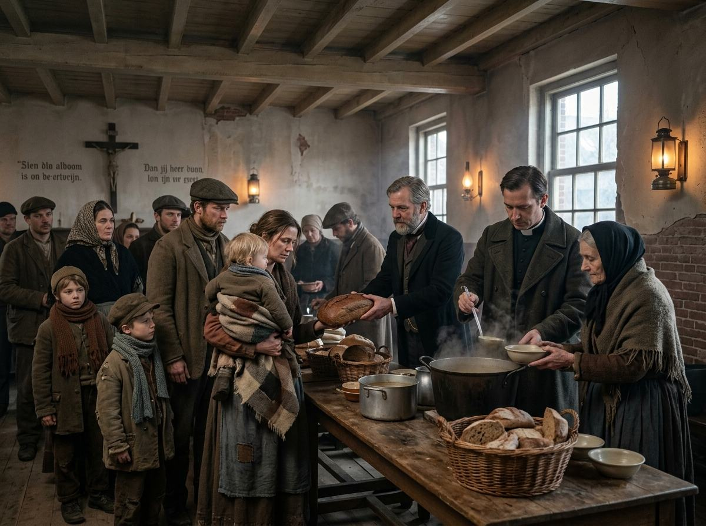
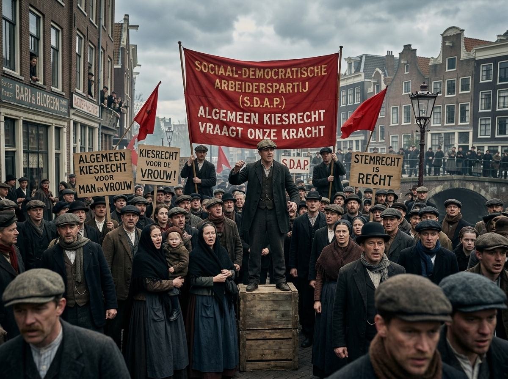

Nog in opbouw. De leerdoelen, begrippen, quizvragen, tijdlijn, games, onderzoeksopdrachten en examentraining staan klaar. De PowerPoints per hoofdstuk volgen.

Hoofdstuk 1 · 19e eeuw
Armenzorg en de sociale kwestie
Liefdadigheid, fabriekswerk, krotwoningen en de eerste sociale wetten.
Hoofdstuk 2 · 1929–1940
Crisis, ellende en schaamte
Zwarte Donderdag, stempelen, werkverschaffing en de aanpassingspolitiek.

Hoofdstuk 3 · 1945–1983
Nooit meer armoede!
Drees, het harmoniemodel en de wetten van de verzorgingsstaat.

Hoofdstuk 4 · 1970–nu
De toekomst van de verzorgingsstaat
Te duur geworden, bezuinigingen, flexwerk en de participatiesamenleving.
Vaardigheid
Kijkwijzer spotprenten
Analyseer een spotprent in vier stappen, zoals op het examen.
Onderzoek
Toen en nu vergelijken
Drie onderzoeksopdrachten: demonstreren, epidemieën en werkverschaffing.
Examentraining
11 vragen met bronnen
Oefen met examenvragen over het hele boekje en kijk jezelf na.
Dit moet je kunnen
De vier leerdoelen van het boekje
- Je kunt beschrijven hoe de armenzorg tot 1930 geregeld was. Je gebruikt de woorden liefdadigheid en nachtwakersstaat.
- Je kunt minimaal twee gevolgen van de crisis in de jaren dertig noemen voor de armenzorg in Nederland.
- Je kunt uitleggen hoe de verzorgingsstaat zich na 1945 ontwikkelde, met de namen van de wetten uit de jaren vijftig en zestig.
- Je kunt minimaal drie problemen van de verzorgingsstaat na 1970 noemen, en minimaal drie oplossingen.